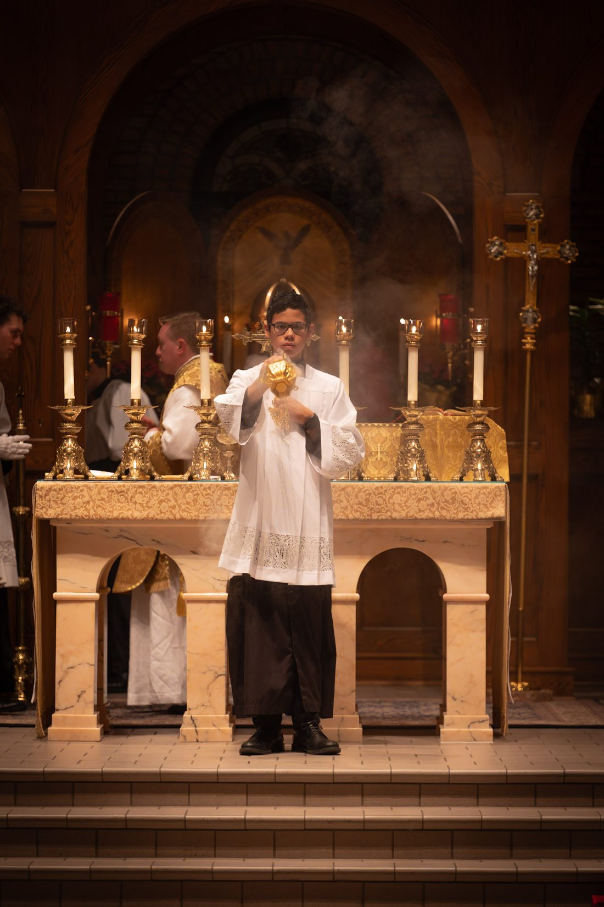

Holiness in the ordinary day.
St. Josemaría Escrivá Academy exists to help children grow in wisdom and in grace. We teach the whole child, mind, heart and soul, within the life of the family and the Catholic Church, from kindergarten through twelfth grade.
Our motto, Fides, Spes et Caritas, is Latin for Faith, Hope and Charity, the three theological virtues. We learn so that we can live them and serve God and our neighbor well.
Josemaría Escrivá was born in Barbastro, Spain, in 1902 and ordained a priest in 1925. On October 2, 1928, he founded Opus Dei, which teaches that every Christian is called to holiness and that ordinary work and family life can be offered to God. He died in Rome on June 26, 1975, and Pope John Paul II canonized him on October 6, 2002.
His message fits a homeschool well: God is found in the daily routine, and small things done with love are great in his eyes.

Each day begins and ends in prayer. The liturgical year sets the rhythm of our seasons, and the faith is woven through every subject rather than set apart.
We draw on the classical tradition: good books, clear thinking, beautiful things, and a love of truth.
Parents are the first teachers. Learning happens alongside meals, chores, Mass and play, so that school and life are not divided.
The academy serves students from kindergarten through twelfth grade, with the older students helping to lead the younger.